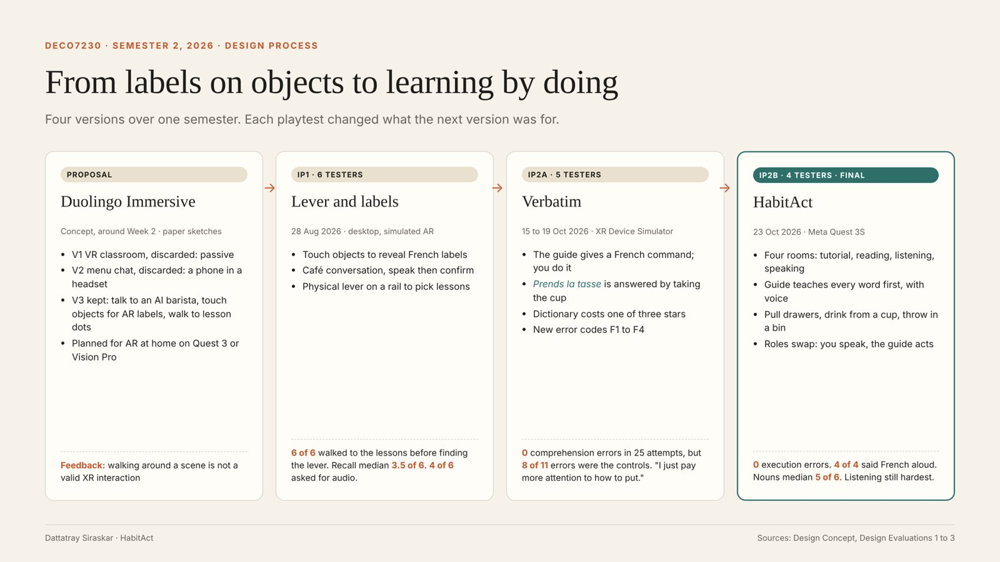
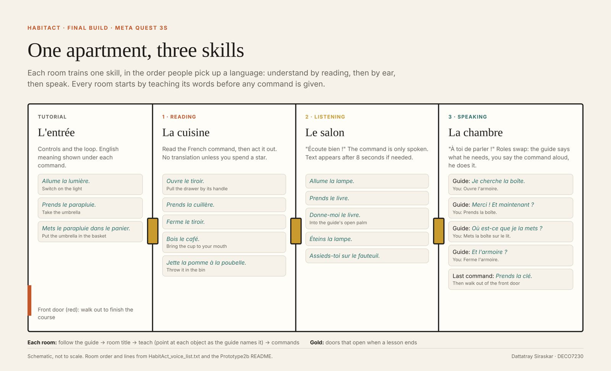

HabitAct: learn a language by doing it
A VR game where a guide gives you commands in French and you answer with your hands. Picking up the book is the answer to "Prends le livre". There are no menus and no answer buttons.

The problem
Language apps teach through taps on a phone. You pick the right answer from a list, but you never use the word. Research on Total Physical Response (Asher, 1969) and the enactment effect (Engelkamp and Zimmer, 1985) shows people remember words better when they act them out. I wanted to see what a lesson looks like when the action itself is the answer.
Round 1: a room full of labels
My first prototype put French labels on objects and used a physical lever to choose lessons. I tested it with 6 people.
All 6 tried to walk to the lessons before they found the lever. A room you can walk around invites walking, so a lever on top of that didn't help. Recall also tracked how memorable each object looked, not the act of labelling it.
So I dropped the labels and the lever and changed the idea: from nouns to verbs. The learner would perform spoken commands, and rooms would become levels.
Round 2: the controls got in the way
Verbatim was a single VR room with five commands. To understand why people failed, I gave every failed attempt a code: F1 for not understanding the word, F2 for the wrong action, F3 for the controller missing, and F4 for not finding the object.
That changed the conclusion. There were no comprehension errors in 25 attempts, but 8 of the 11 errors were F3. A low completion rate looked like a language problem. It was a controls problem, so the right fix was the opposite one.
"I just pay more attention to how to put, rather than what is the word put in French."
Round 2 tester
I made catch zones larger and more forgiving, added reach to grab, gave the guide a voice, and added a teaching stage before every test, because another tester asked what happens if you've never seen any of the words before.
Round 3: HabitAct on the headset
The final build is a four room apartment on the Meta Quest 3S. Each room teaches one skill, in the order Asher recommends: understand first, then speak.

Ten verbs are each detected by a different physical action: you pull a drawer by its handle to open it and bring a cup to your mouth to drink. If your real head goes into a virtual wall, the view goes black so you can't peek into the next room. The game writes its own session log, because in round 2 my hand count and the score panel disagreed for 3 of 5 testers.

What didn't work, and what I'd do next
Three of four final testers said listening was the hardest part, and the synthetic voice was the main reason. Long phrases were too much: "Mets la boîte sur le lit" was said understandably by only 1 of 4, while the short phrases worked 11 times out of 12. Next I'd use a native speaker's voice, add a visible replay button, play listening commands twice with the second slower, and split long phrases in half.
My role
This was an individual project. The concept, all three iterations, the design decisions, the curriculum, the 15 playtests and the analysis are mine. I built the first prototype scene by hand. The C# scripts were written with Claude to my specification, as declared in my course submissions, and I tested every build and directed each fix.